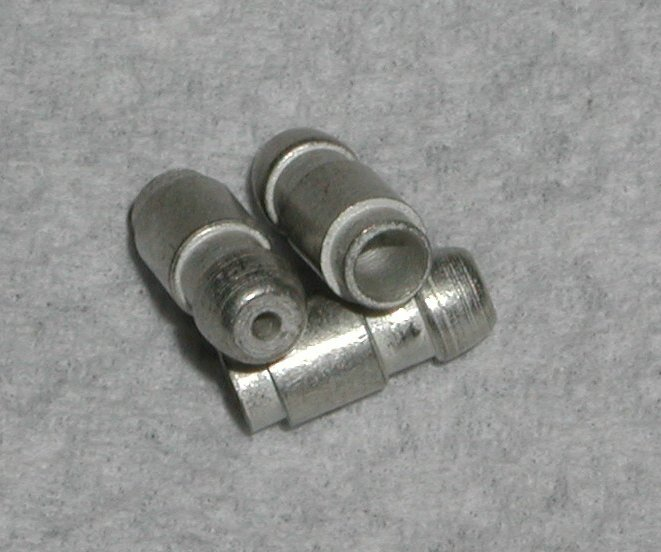
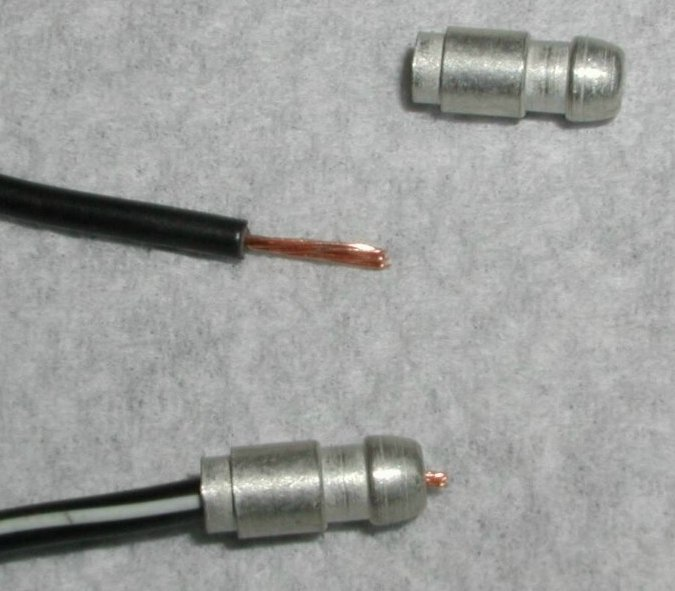
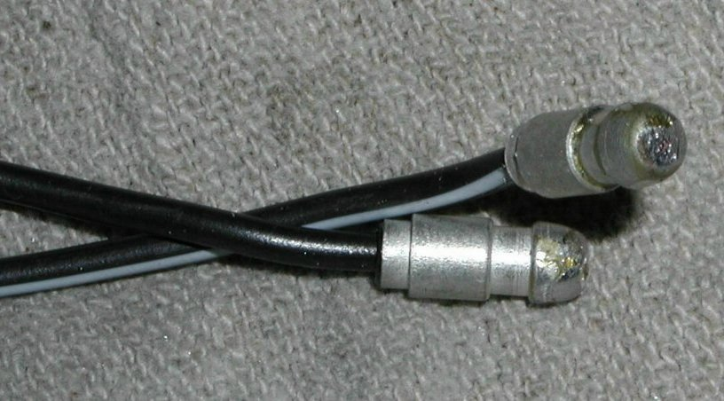

Lucas Bullet Type Terminal
and Installation
The current price for each terminal (part # 51-900269) is
$0.92
each as of
02/12/21.

This is a picture of three terminals.
Installation Instructions

First : Trim approximately 3/8" of the insulation from the end of the wire to which you are going to attach the terminal.
Some of the wire should stick out of the end of the terminal.
 Second : Place the wires in a vise with the terminals sticking up and solder the terminal to the wire.
Apply the heat to the terminal and when the solder melts it will run down the hole in the end of the terminal and secure the wire to the
terminal. Normally the terminal will lower itself down the wire letting a bit more wire stick out of the end and if the wire insulation
is of the preferred material, and all goes well, you will get the insulation to melt a bit and seal the end of the terminal.
Second : Place the wires in a vise with the terminals sticking up and solder the terminal to the wire.
Apply the heat to the terminal and when the solder melts it will run down the hole in the end of the terminal and secure the wire to the
terminal. Normally the terminal will lower itself down the wire letting a bit more wire stick out of the end and if the wire insulation
is of the preferred material, and all goes well, you will get the insulation to melt a bit and seal the end of the terminal.

Last : You will have to file off the end of the wire sticking out of the terminal and any solder that sticks to the outside of the terminal.
Return to Old Britts home page
….. Our Products, Ordering
Norton Parts
….. Misc. Electrical
This page was written and designed by F. H. Eaton
& Associates if you have any questions or comments please
contact us at info@fheaton.com